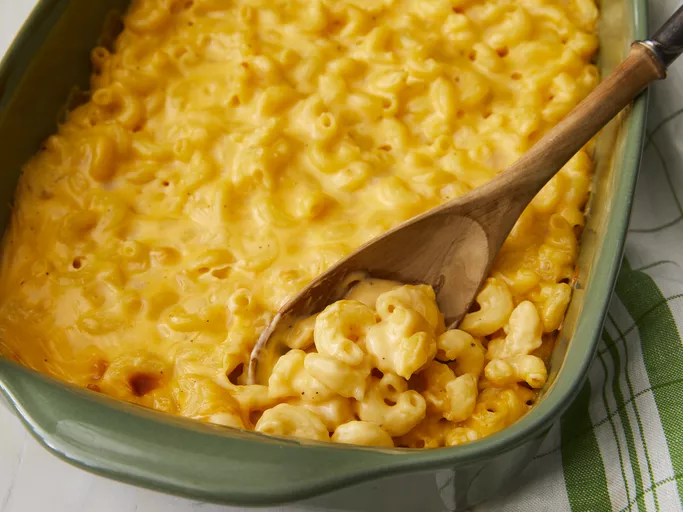

Home
Baked Mac

Description
Golden and bubbling straight from the oven, baked mac is the definition of comfort food.
Tender elbow pasta is coated in a rich, velvety cheese sauce,
often made from sharp cheddar that melts into every curve and crevice.
As it bakes, the top transforms into a lightly crisp, golden crust, sometimes finished with buttery breadcrumbs,
while the inside stays creamy and indulgent. Each spoonful balances warmth,
savoriness, and nostalgia, filling the kitchen with an inviting aroma that promises pure, satisfying comfort.
Ingredients
- 2 tablespoons butter
- 1/4 cup finely chopped onion
- 2 tablespoons all-purpose flour
- 2 cups milk
- 3/4 teaspoon salt
- 1/2 teaspoon dry mustard
- 1/4 teasoon ground black pepper
- 1 (8 ounce) package elbow macaroni
- 2 cups shredded sharp Cheddar cheese
- 1 (8 ounce) package processed American cheese, cut into strips
Directions
- Preheat the oven to 350 degrees F (175 degrees C).
- Melt butter in a medium saucepan over medium heat. Sauté onion for 2 minutes. Stir in flour and cook for 1 minute, stirring constantly.
- Then stir in milk, salt, mustard, and pepper. Cook, stirring frequently, until mixture boils and thickens.
- Meanwhile, bring a pot of lightly salted water to a boil. Add macaroni and cook until al dente, 8 to 10 minutes; drain.
- Add Cheddar and American cheeses to milk mixture; stir until cheese melts.
- Combine cheese sauce and macaroni in a 2-quart baking dish; mix well.
- Bake in preheated oven until hot and bubbly, about 30 minutes. Let cool 10 minutes before serving.